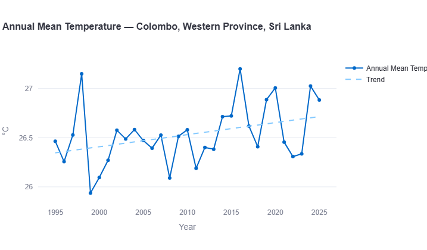
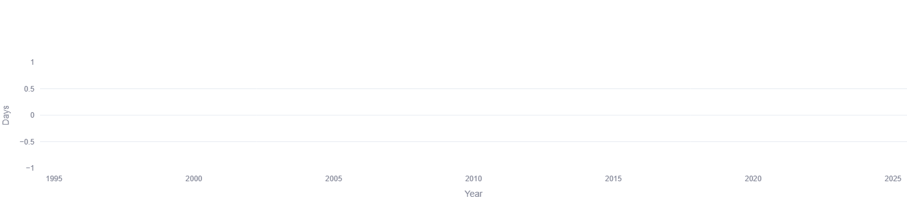
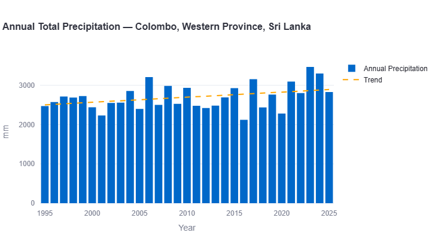
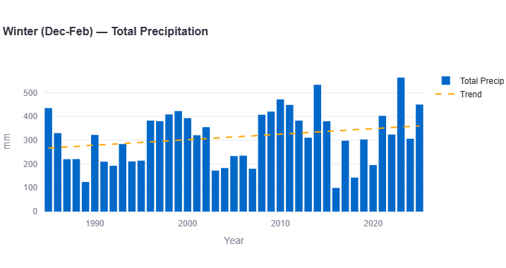
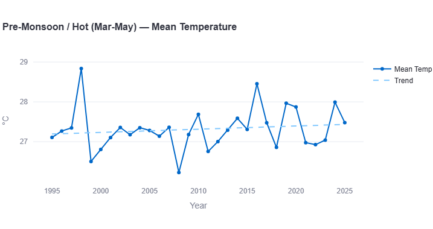
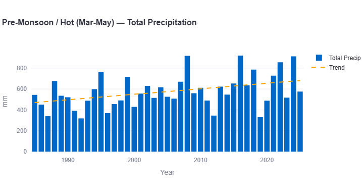
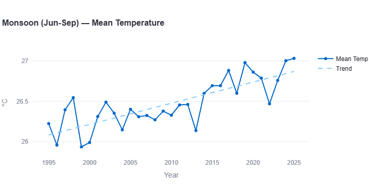
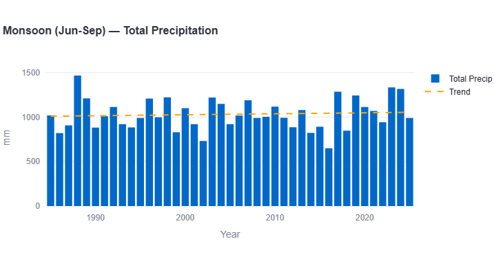
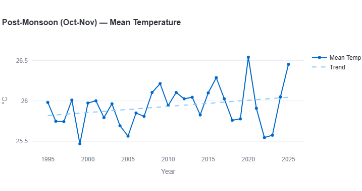
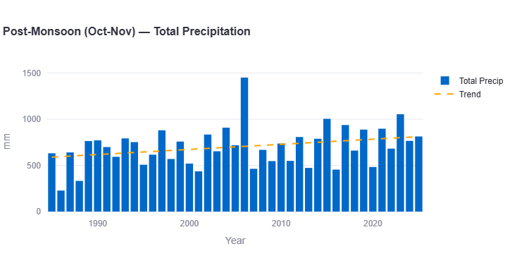

Colombo, Sri Lanka's commercial capital, sits in a genuinely different climate zone from the other three South Asian cities covered in this series. Positioned on a tropical island exposed to both the southwest and northeast monsoons, Colombo receives dramatically more rainfall year-round than Karachi, Delhi, or Dhaka — and the 30-year data shows that rainfall trend is still climbing, across nearly every season.
Using the same methodology applied to Karachi, Delhi, and Dhaka, this report breaks down 30 years of historical reanalysis weather data (1995–2025) for Colombo, season by season.
All figures below come from ERA5/ERA5-Land reanalysis data (Copernicus/ECMWF), covering 1995 through 2025, visualized through our interactive Climate Trend Dashboard.
Annual Mean Temperature

Colombo's annual mean temperature record shows a moderate, fairly steady warming trend. Starting around 26.3°C in the mid-1990s, the trend line climbs to roughly 26.7–26.8°C by 2025. The record's single most dramatic point is an early outlier — a sharp spike to 27.15°C in 1998 followed immediately by the coldest year in the entire dataset, just 25.95°C in 1999. More recent years show a run of warm points: 2016 (27.2°C, the record high), 2019 (26.95°C), and 2024 (27.05°C).
Key Figure: Warming Rate
This places Colombo almost exactly in line with Delhi's annual warming rate (~0.15°C/decade), and noticeably faster than Karachi (0.13°C/decade) but well behind Dhaka's steep 0.30°C/decade. Colombo's island, coastal-tropical position appears to provide some of the same moderating effect seen in Karachi's coastal climate, tempering its warming relative to the two more continental/delta cities in this series.
Extreme Heat: Days Above 40°C

Across the entire 30-year record, Colombo shows zero days per year with maximum temperature reaching 40°C — not even the rare single-year exception found in Dhaka's record. This makes Colombo, alongside Dhaka, one of the two cities in this series essentially untouched by extreme 40°C+ heat, a reflection of its tropical maritime climate, which keeps temperature swings comparatively narrow year-round despite high humidity.
Annual Total Precipitation

This is where Colombo stands apart most dramatically from every other city in this series. Annual rainfall totals sit in the 2,200–3,000mm range for nearly the entire record — roughly 4 times Delhi's typical annual total and well above even Dhaka's substantial rainfall. The trend line climbs from around 2,400mm in the mid-1990s to roughly 2,900mm by 2025, with the wettest years on record — above 3,300mm — occurring in 2023 and 2024.
Key Figure: Precipitation Trend
Unlike Dhaka's declining rainfall trend, Colombo's precipitation is increasing — more in line with the pattern found in Karachi and Delhi, though starting from a vastly higher baseline. Combined with an already-high average, this rising trend reinforces Colombo's position as the consistently wettest of the four cities studied in this series.
Seasonal & Monsoon Trend
Breaking the data down by season — Winter (December–February), Pre-Monsoon/Hot (March–May), Monsoon (June–September), and Post-Monsoon (October–November) — shows where Colombo's warming and rainfall trends are concentrated.
Winter (Dec-Feb)


Colombo's winter temperature is the most stable of any season in the record — the trend line stays almost perfectly flat around 26.2°C across the full three decades. The record's low point is a sharp dip to 25.3°C in 2011, while the high point reaches 27.2°C in 2016.
Key Figures: Winter
Warming rate: approximately +0.05°C per decade (essentially flat)
Precipitation trend: approximately +25mm per decade
Winter's temperature is Colombo's most climate-stable signal — but its rainfall isn't quite as flat as the temperature trend, showing a modest, real increase. Winter rainfall itself is comparatively modest for Colombo, typically 150–450mm, with standout years around 2013 and 2023, both exceeding 530mm.
Pre-Monsoon / Hot (Mar-May)


Pre-monsoon temperatures show mild warming, with the trend line rising from around 27.2°C in the mid-1990s to roughly 27.5°C by 2025. The record's most extreme point by far is 1998, spiking to nearly 28.85°C — well above any other year — while 2008 stands out as the coolest pre-monsoon season, dipping to 26.4°C.
Key Figures: Pre-Monsoon
Warming rate: approximately +0.10°C per decade
Precipitation trend: approximately +50mm per decade
Pre-monsoon rainfall shows a clearer upward trend than temperature does in this season, rising from a baseline near 535mm in the mid-1990s to roughly 680mm by 2025 — notably wetter peak years appear around 2008, 2016, and 2023, all approaching or exceeding 900mm.
Monsoon (Jun-Sep)


The monsoon season shows Colombo's clearest and fastest warming trend of any season — climbing steadily from around 26.2°C in the mid-1990s to roughly 26.9°C by 2025, with the most recent years (2024–2025) recording the warmest monsoon temperatures in the entire record, just above 27°C.
Key Figures: Monsoon
Warming rate: approximately +0.22°C per decade
Precipitation trend: approximately +17mm per decade
This matches the broader regional pattern found in Karachi and Delhi, where the monsoon season consistently shows the fastest seasonal warming. Monsoon rainfall itself stays relatively steady around 1,000–1,050mm across the whole record, though notable peak years — 2017, 2023, and 2024, all above 1,250mm — suggest increasing variability even within a fairly stable long-term average.
Post-Monsoon (Oct-Nov)


Post-monsoon temperatures show Colombo's mildest seasonal warming trend — rising only slightly from around 25.85°C in the mid-1990s to roughly 26.1°C by 2025. The standout year is 2020, spiking to 26.55°C, the warmest post-monsoon period on record, while 1999 recorded the coolest at 25.47°C.
Key Figures: Post-Monsoon
Warming rate: approximately +0.08°C per decade
Precipitation trend: approximately +40mm per decade
Despite the mildest temperature trend of any season, post-monsoon shows one of Colombo's strongest precipitation increases — driven substantially by a dramatic outlier year around 2006, which spiked to nearly 1,450mm, by far the highest total in this season's entire record and roughly triple a typical year.
What This Means for Colombo
- Colombo is, by a wide margin, the wettest city in this series. Its annual rainfall — 2,200-3,000mm — dwarfs Dhaka's already-substantial totals and vastly exceeds Delhi's and Karachi's, a reflection of its exposure to both major regional monsoon systems.
- Unlike Dhaka, Colombo's rainfall is trending up, not down — across every single season measured, precipitation shows a positive trend, aligning it more closely with the "wetter monsoon" pattern found in Karachi and Delhi than with Dhaka's declining trajectory.
- Extreme heat is essentially a non-issue. With zero days above 40°C across 30 years, Colombo's climate risk profile centers almost entirely on rainfall and flooding rather than heat stress — a very different public health planning priority than Delhi's.
- Winter temperature stability stands out. Colombo's winter shows the flattest temperature trend of any season, suggesting its tropical maritime position provides genuine year-round temperature moderation — though winter rainfall itself still shows a modest upward trend.
Comparing Four South Asian Capitals
With Karachi, Delhi, Dhaka, and now Colombo analyzed using the same methodology, the full regional picture becomes clear — and no two cities tell quite the same story.
Colombo vs. Karachi: Two Coastal Cities, Very Different Rainfall Scale
Both Karachi and Colombo are coastal cities with comparatively moderate warming rates, and both show rising precipitation trends. But the scale is worlds apart: Colombo's typical annual rainfall (2,200-3,000mm) is roughly 4-8 times Karachi's (200-800mm) in a normal year. Karachi's coastal-desert exposure and Colombo's tropical monsoon-convergence position produce fundamentally different climates despite sharing a "coastal" label. See the full Karachi climate trend report for the complete picture.
Colombo vs. Delhi: Similar Warming Rate, Opposite Heat Risk
Colombo and Delhi warm at nearly identical annual rates (~0.15°C/decade for both) — but their extreme-heat profiles couldn't be more different. Delhi records 20-50+ days per year above 40°C; Colombo records essentially none. This makes Delhi's primary climate risk heat-driven, while Colombo's is overwhelmingly rainfall-driven. Read the full Delhi climate trend report for the seasonal detail.
Colombo vs. Dhaka: Opposite Rainfall Trajectories
This is the most striking contrast in the series. Dhaka warms roughly twice as fast as Colombo (~0.30°C/decade versus ~0.15°C/decade) but shows a declining rainfall trend (~−140mm/decade); Colombo warms more slowly but shows a rising trend across every season (~+170mm/decade annually). Two tropical, monsoon-exposed South Asian capitals, moving in genuinely opposite rainfall directions. See the full Dhaka climate trend report for the complete breakdown.
| Metric | Karachi | Delhi | Dhaka | Colombo |
|---|---|---|---|---|
| Annual warming rate | +0.13°C/dec | ~+0.15°C/dec | ~+0.30°C/dec | ~+0.15°C/dec |
| Annual precipitation trend | +88.7mm/dec | ~+35mm/dec | ~−140mm/dec | ~+170mm/dec |
| Typical annual rainfall | 200-800mm | 450-950mm | 1,300-2,700mm | 2,200-3,000mm |
| Fastest-warming season | Monsoon | Post-Monsoon | Monsoon | Monsoon |
| Extreme heat days (≥40°C) | 0-5/year | 20-50+/year | ~0/year | 0/year |
Four South Asian capitals, four distinct climate identities: Karachi's moderate coastal-desert warming with intensifying rare rainfall; Delhi's fast, extreme-heat-dominated continental climate; Dhaka's rapid warming paired with a surprising rainfall decline; and Colombo's steady tropical warming beneath consistently rising rainfall across every season. Together, they underline why "South Asia's climate" can't be treated as one single story.
Search any South Asian city and see its own temperature, rainfall, and monsoon trends, built from 30 years of data.
Open the Interactive Dashboard →Data Source & Methodology
All figures in this report are derived from the Open-Meteo Historical Weather API, built on ERA5 and ERA5-Land reanalysis data produced by the European Centre for Medium-Range Weather Forecasts (ECMWF) through the Copernicus Climate Change Service. Trend rates are estimated by reading the linear regression trend line plotted on each chart across the full 1995–2025 period; where a chart did not display a printed decade-rate figure, the value given here is a closely reasoned visual estimate, marked "approximately."
Seasonal boundaries follow the standard South Asian meteorological convention: Winter (December–February), Pre-Monsoon/Hot (March–May), Monsoon (June–September), and Post-Monsoon (October–November).
As with any reanalysis dataset, figures represent a grid-cell average (roughly 9–25km resolution) rather than a single-point station reading, and may differ from any individual weather station's direct measurements.
Frequently Asked Questions
Is Colombo the wettest city in South Asia?
Among the four cities analyzed in this series — Karachi, Delhi, Dhaka, and Colombo — yes, by a wide margin. Colombo's typical annual rainfall of 2,200-3,000mm substantially exceeds even Dhaka's already-high totals.
Is Colombo warming?
Yes, at an estimated rate of approximately 0.15°C per decade — nearly identical to Delhi's rate, faster than Karachi, but notably slower than Dhaka's approximately 0.30°C per decade.
Does Colombo experience extreme heat above 40°C?
No — the 30-year record shows zero days per year at or above 40°C, making Colombo's climate risk profile centered almost entirely on rainfall rather than heat.
Is Colombo's rainfall increasing or decreasing?
Increasing — an estimated 170mm per decade at the annual level, with every individual season also showing a positive precipitation trend, unlike Dhaka's declining pattern.
Which season is warming fastest in Colombo?
The monsoon season (June-September), at an estimated 0.22°C per decade — consistent with the same pattern found in Karachi and Delhi, where the monsoon season warms fastest of the four.
How does Colombo compare to Dhaka?
The two cities move in opposite rainfall directions: Dhaka warms roughly twice as fast as Colombo but shows declining precipitation, while Colombo warms more slowly but shows rising rainfall across every season measured.
For a closer look at Colombo's rainfall specifically — year-by-year totals, wettest years on record, and the season-by-season breakdown — see our dedicated Colombo annual rainfall report.
See how Colombo compares across the region in our South Asia climate trend report, covering all 8 cities in this series. For a closer look at Colombo's rainfall specifically — year-by-year totals, wettest years on record, and the season-by-season breakdown — see our dedicated Colombo annual rainfall report, and for how the 2026 monsoon compares, see our 2026 monsoon update.